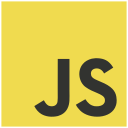
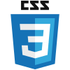
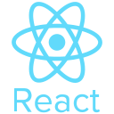
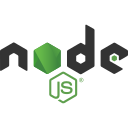
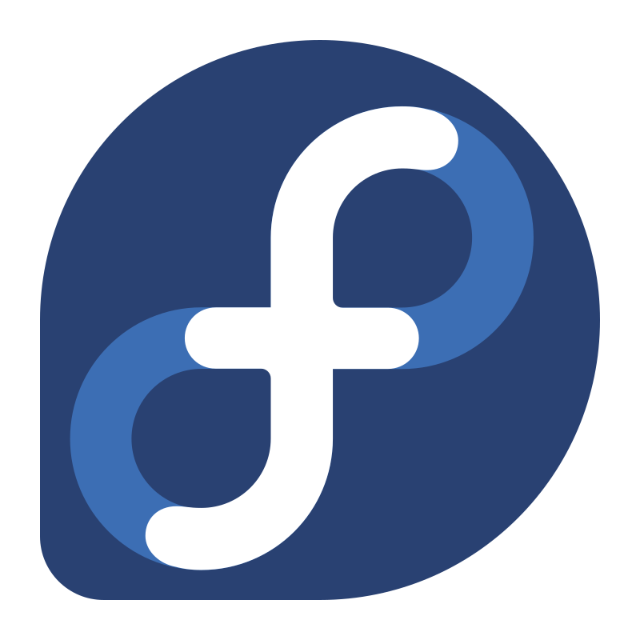
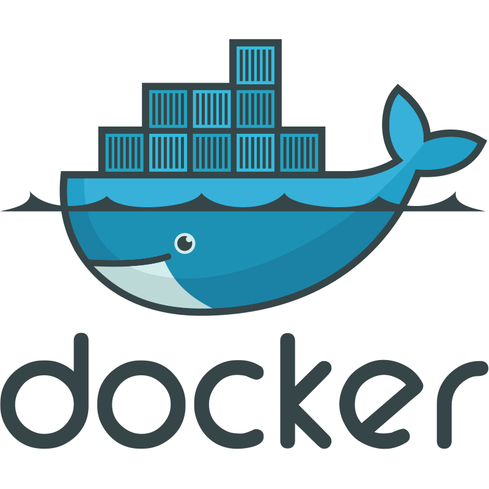
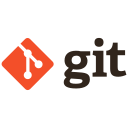

Hi, I'm Amal!
Full Stack Software Engineer
Electronics Engineering · Finance · Open Source Software · Linux
Based in Melbourne, Australia, I enjoy solving niche, real world problems by bridging complex technical requirements with clear business goals. I build practical, resilient software grounded in first principles understanding the fundamentals, keeping complexity under control, and choosing technology deliberately.
About
I enjoy building practical, meaningful software, with a particular focus on web-based applications where good engineering can have a direct and lasting impact.
I am a firm believer in continuous self-improvement, whether in communication, business, management, or software development. I value living in a time where technology, when used ethically, can significantly improve people's lives.
I'm particularly interested in how LLMs and AI can enhance productivity and improve the way we work and build software.
I also believe strongly in understanding the fundamentals of the technologies I use. Frameworks evolve, but core web technologies such as JavaScript, HTML, and CSS endure. This belief in simplicity and performance is reflected in this website, which is built without a frontend framework and relies on foundational web technologies.
Tech Stack







- AI & Applied Engineering: Local LLM Inference (Ollama, Qwen 3.5), OpenClaw Homelab Deployment, Infrastructure Virtualisation, AI assisted Workflows (Claude, Gemini).
Projects
Over the years, I've built a range of software and electronics projects spanning web applications, systems, infrastructure, and hardware. Explore my projects on GitHub, where you can see how they work, browse the source code, and fork projects for your own use.
Let's connect
Interested in working together, discussing a project, or just talking engineering?